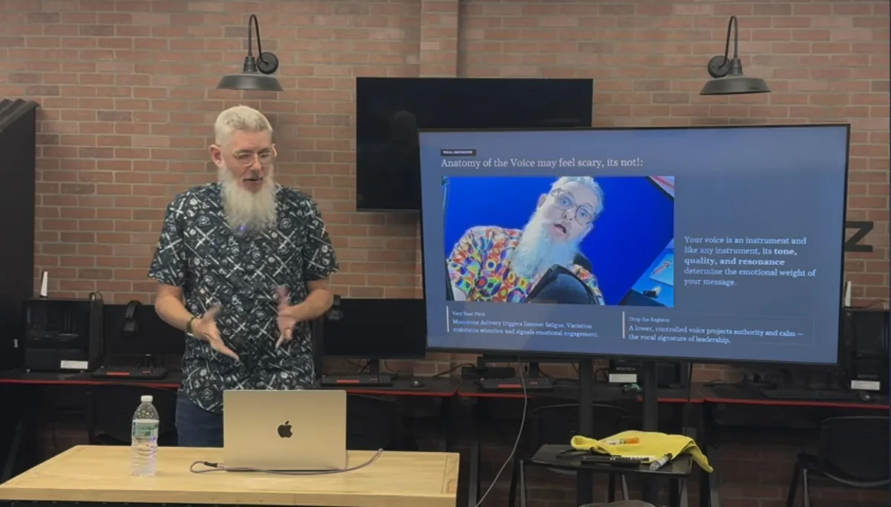
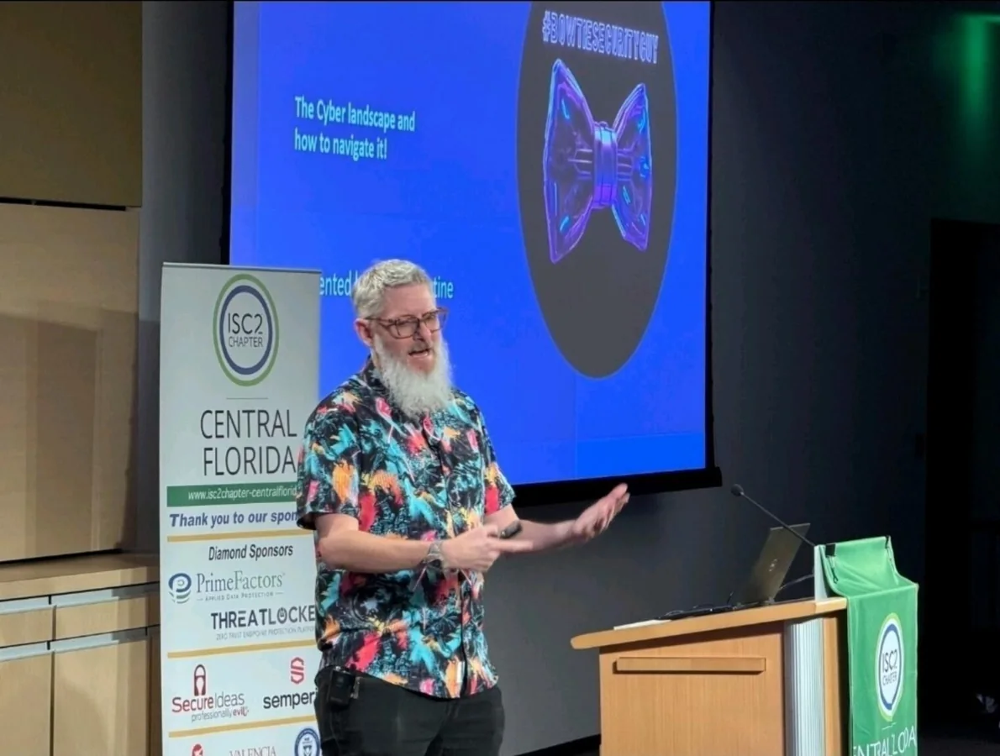
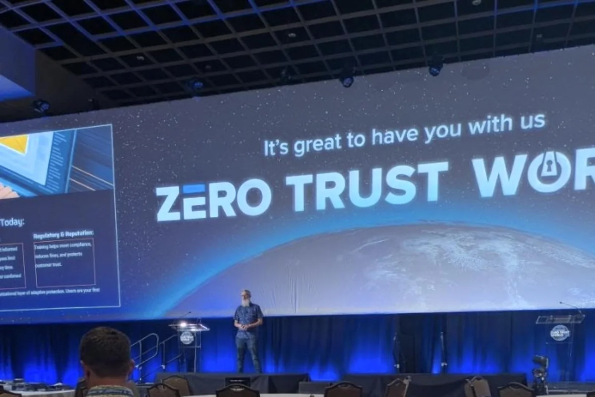
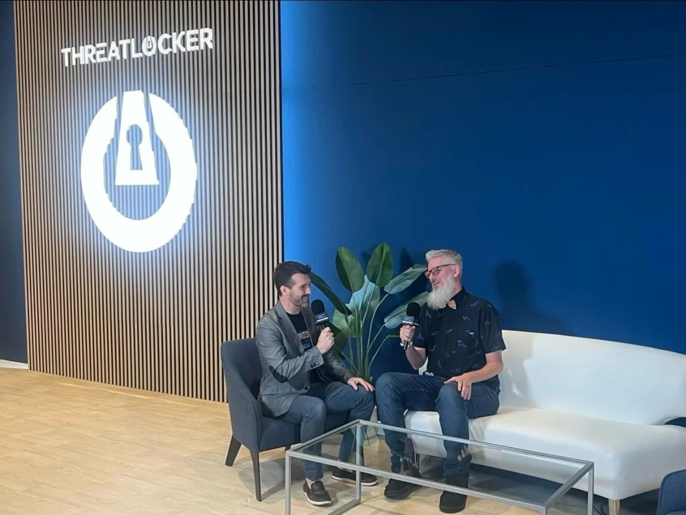
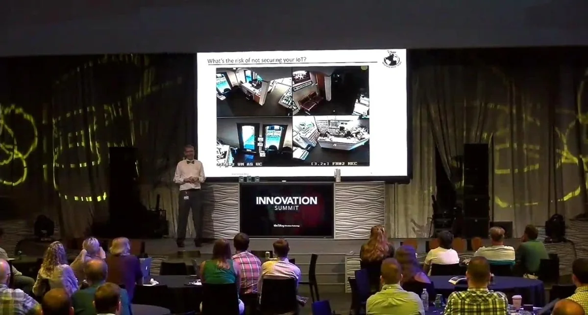
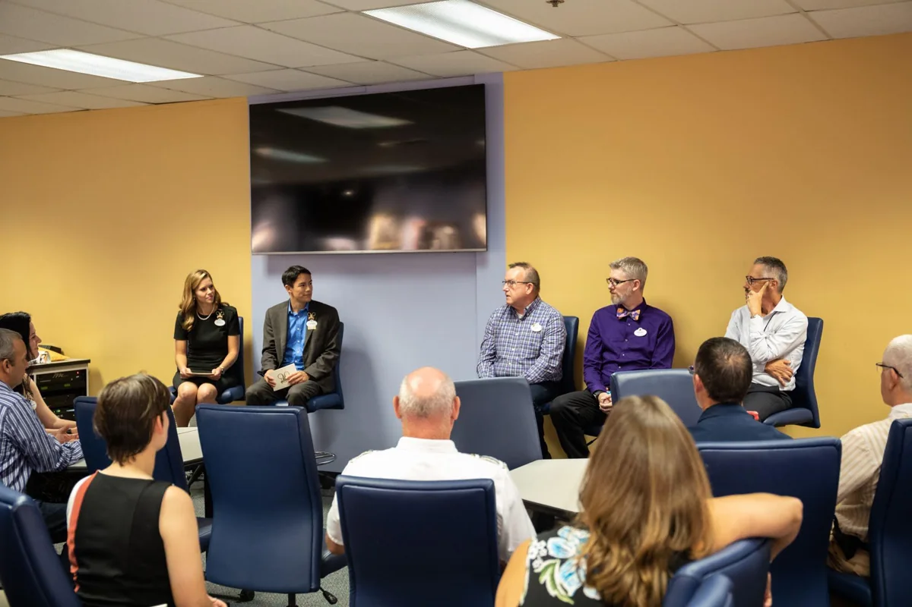
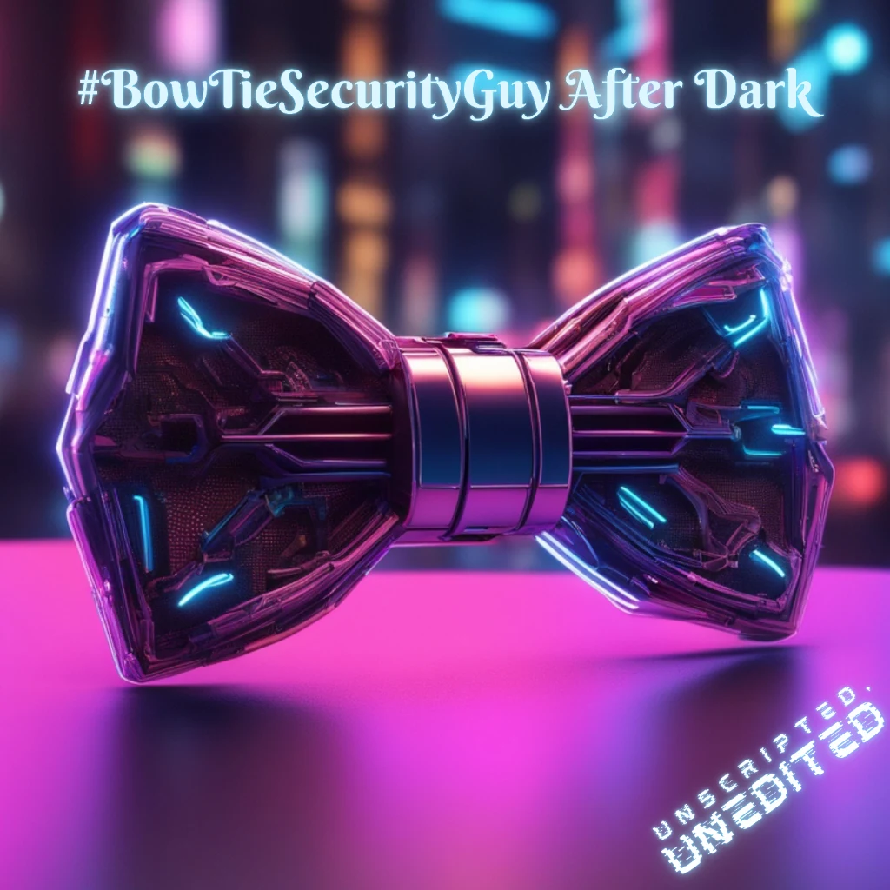

Cybersecurity Careers
Career paths / Hiring / CommunicationAn honest look at getting into cybersecurity, navigating the job market, and developing the communication and relationship skills that support a lasting career.
People first. Real experience. Honest conversations.
Cybersecurity leader, mentor, maker, and podcast host. I share what the work really looks like, help people find their footing, and bring a practical perspective to building stronger security teams.

Leader. Mentor. Maker.
I’m Rob Whetstine, known in the cybersecurity community as BowTieSecurityGuy. My career spans more than two decades in technology and cybersecurity, including nearly 20 years at Disney.
I started on the help desk and built my way into security through curiosity, practical experience, and relationships. My background includes cyber intelligence, incident response, vulnerability management, architecture, and engineering. Today, that experience shapes how I lead and support others.
Mentoring is a central part of my work in the community. Through videos, conversations, and BowTieSecurityGuy After Dark, I share candid lessons about hiring, leadership, and life in cybersecurity.
Outside security, I’m a maker and gamer who enjoys building props and bringing ideas to life. The bowties are part of the story, too.
Technical skills matter. So do the conversations, decisions, and relationships that make a team work. My focus is helping people understand the realities of a cybersecurity career and helping leaders create teams where people can succeed.
For community events, panels, podcasts, and team conversations. Connect with me to discuss your audience and the right focus.
An honest look at getting into cybersecurity, navigating the job market, and developing the communication and relationship skills that support a lasting career.
Lessons from technical work and team leadership, with a focus on supporting people, addressing challenges, and building a healthier security culture.
Conversations about finding support, sharing experience, and creating meaningful relationships across the cybersecurity community.
Technical talks on IoT and mobile security, vulnerability management, penetration testing, and security awareness. Practical perspectives on finding weaknesses, prioritizing risk, and turning security findings into action.
From company events to cybersecurity conferences, bringing practical experience into the conversation.






Unscripted conversations with cybersecurity professionals about their paths into the field, the challenges behind the work, and the lessons they wish they had learned sooner.
Explore career stories, leadership, and the day-to-day reality of working in security.

Guest conversations about cybersecurity, leadership, and the people behind the work.

A recurring guest on Simply Cyber Career Hotline, sharing perspectives on cybersecurity careers and the job market. Watch a featured appearance below.
Watch the Career Hotline ↗
A Simply Cyber conversation about preparing for Hacker Summer Camp and making the most of cybersecurity conferences.
Watch the Prep Video ↗
A conversation about leadership, mentoring, and Rob’s journey from help desk to cybersecurity leadership.
Watch the Interview ↗A discussion with Aaron Crow about networking, empathetic leadership, and finding a path into cybersecurity.
Listen to the Interview ↗Planning an event, looking for a podcast guest, or hoping to connect about your cybersecurity career? Send me a message on LinkedIn. For speaking inquiries, share your audience, dates, and topic.
Find videos, podcast conversations, and perspectives from the cybersecurity community.